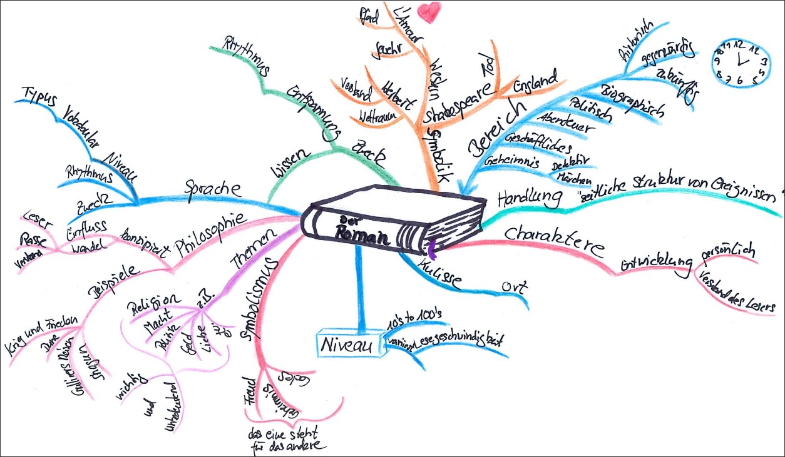

Rekursion
Joern Ploennigs · AI4SC
Midjourney: Fractal
Hörsaalfrage
Was müsst ihr tun, um alle Räume in einem mehrstöckigen Gebäude zu inventarisieren?

Rekursion — Divide-and-Conquer
Rekursion
Rekursion ist eine Strategie für Probleme, die sich in kleinere Probleme desselben Typs zerlegen lassen. Eine rekursive Funktion ruft sich selbst auf und löst dabei jedes Mal ein einfacheres Teilproblem.
- Zwei Bestandteile: Basisfall (direktes Ergebnis) und rekursiver Fall (Zerlegung)
- Geeignet für hierarchische Strukturen: Bäume, Modelle, Gebiete
- → S09a: Rekursion als Divide-and-Conquer-Algorithmusstrategie
Das rekursive Muster
- Basisfall: kein weiterer Selbstaufruf — direkte Rückgabe
- Rekursiver Fall: Teilung → Delegation → Zusammenführung
Beispiel: Fakultät (Einführung)
factorial(5)→5 × factorial(4)→ … →5 × 4 × 3 × 2 × 1- Basisfall:
factorial(1)→1
Achtung: Endlosrekursion
- Wenn der Basisfall nie erreicht wird, ruft die Funktion sich endlos selbst auf
- Deshalb muss mindestens ein Pfad ohne rekursiven Aufruf existieren
- Python stoppt bei ~1000 Aufrufen mit
RecursionError
Zwei Speicherregionen im RAM
Stack
- Für Funktionsaufrufe
- LIFO-Prinzip (Last In, First Out)
- Begrenzter Speicher
Heap
- Für Variablen
- FIFO-ähnlich (First In, First Out)
- Dynamisch groß (RAM)
Der Stack wächst mit jedem Aufruf
- Der Stack ist eine Liste in der nachvollzogen wird welche Funktionen gerade aufgerufen wurden
- Damit ist bekannt, wohin man zurückkehrt, wenn eine Funktion beendet wird
- Bei endloser Rekursion, wird die Liste unendlich groß
- Es kommt bei endloser Rekursion zu Stack-Overflow-Fehlern
- Es kommt zum harten Absturz des Programmes
Agentic Workflow: Rekursive Funktion prüfen
Wenn KI eine rekursive Funktion generiert:
- Basisfall identifizieren — gibt es mindestens einen Pfad ohne Selbstaufruf?
- Erste zwei Aufrufe von Hand durchlaufen — stimmt das Ergebnis?
- Stack-Tiefe abschätzen — wie tief rekursiert die Funktion bei realer Eingabegröße? (Python-Limit: ~1000)
Hörsaalfrage
Wie navigiert man durch alle Elemente eines BIM-Modells — ohne vorher die Tiefe zu kennen?
BIM-Hierarchie — natürliche Rekursion
Gebäudemodell
Gebäude A
├─ Stockwerk 1
│ ├─ Raum 101
│ │ ├─ Tür
│ │ └─ Fenster
│ └─ Raum 102
└─ Stockwerk 2
└─ Raum 201- Jede Ebene hat die gleiche Struktur
- Dieselbe Funktion traversiert jede Ebene
- Basisfall: Element ohne Kinder
- Tiefe ist zur Compile-Zeit unbekannt
KI-generierter Code: BIM-Traversierung
Vor dem Ausführen:
- Wo ist der Basisfall?
- Was passiert beim ersten rekursiven Aufruf?
- Wie tief kann die Hierarchie werden?
BIM: Erwartete Ausgabe verifizieren
Eingabe
Gebäude A
├─ Stockwerk 1
│ ├─ Raum 101 (Tür, Fenster)
│ └─ Raum 102
└─ Stockwerk 2
└─ Raum 201Erwartete Ausgabe
Gebäude A
Stockwerk 1
Raum 101
Tür
Fenster
Raum 102
Stockwerk 2
Raum 201Quadtree — Rekursive Raumaufteilung
- Gebiet enthält mehr als einen Punkt
- → Vierteile in vier Quadranten
- Jeden Quadranten rekursiv unterteilen
Basisfall: ≤ 1 Punkt im Quadranten oder Tiefenlimit
Anwendung in der Umweltinformatik:
- Geländemodelle
- Sensornetze
- GIS-Abfragen und Nachbarschaftssuche
Quadtree — Rekursiver Code
def quadtree_unterteile(grenzen, punkte, max_tiefe=4, tiefe=0):
if tiefe >= max_tiefe or len(punkte) <= 1: # Basisfall
return {"grenzen": grenzen, "punkte": punkte}
mx, my = (grenzen[0]+grenzen[2])/2, (grenzen[1]+grenzen[3])/2
quadranten = [...] # vier Teilgebiete
return [quadtree_unterteile(b, pts, ...) for b, pts in quadranten]- Basisfall: Tiefenlimit oder ≤ 1 Punkt
- Vier rekursive Aufrufe — einer je Quadrant
- Typische Tiefe: 4–8 für Geländedaten
Rekursion vs. Iteration — Vergleich
Rekursion
- Klar bei hierarchischen Problemen
- Entspricht natürlicher Problemstruktur
- Stack-Tiefe begrenzt (~1000 in Python)
- Schwerer zu debuggen
Iteration (Schleife)
- Kein Stack-Overhead
- Einfacher zu debuggen
- Expliziter Stack nötig für Baumtraversierung
- Unnatürlich für hierarchische Daten
Wann Rekursion wählen?
Ja — Rekursion
- Datenstruktur ist selbst rekursiv (BIM, Quadtree, Verzeichnisbaum)
- Rekursionstiefe bleibt klein und kontrollierbar
- Lesbarkeit hat Vorrang
Nein — Iteration
- Lange flache Listen oder einfache Schleifen
- Tiefe unbekannt oder potenziell groß
- Performance-kritisch
Die Grenze des Stacks gilt für jede Rekursion: Python stoppt bei rund 1000 Aufrufen mit
RecursionError.
Lesson Learned
Welche Lerntypen gibt es?
Lesson Learned - Nacharbeit
- Survey (Überblick gewinnen): Blättert durch ein Thema und gewinnt einen Überblick
- Question (Fragen): Notiert euch Fragen zu Punkten die ihr nicht versteht.
- Read (Lesen): Lest eure Notizen durch; Hebt Schlüsselwörter hervor; Recherchiert zu den Fragen.
- Recite (Wiedergeben): Rekapituliert jeden Abschnitt (Inhalt, Schlüsselwörter, Zusammenhänge). Strukturiert euch die Inhalte, z.B. mit Mindmaps. Wiederholt Gelerntes mehrmals (Karteikarten).
- Review (Rückblick): Wiederholt gedanklich die wichtigsten Punkte und beantwortet eure Fragen.


Mindmap
- Man arbeitet von innen nach außen
- Reduziert Themen auf einzelne Begriffe
- Man entwickelt automatisch eine Struktur
- Nutzt Farben und Symbole
- Verweise zwischen Begriffen erschaffen
Questions

Artificial
Intelligence